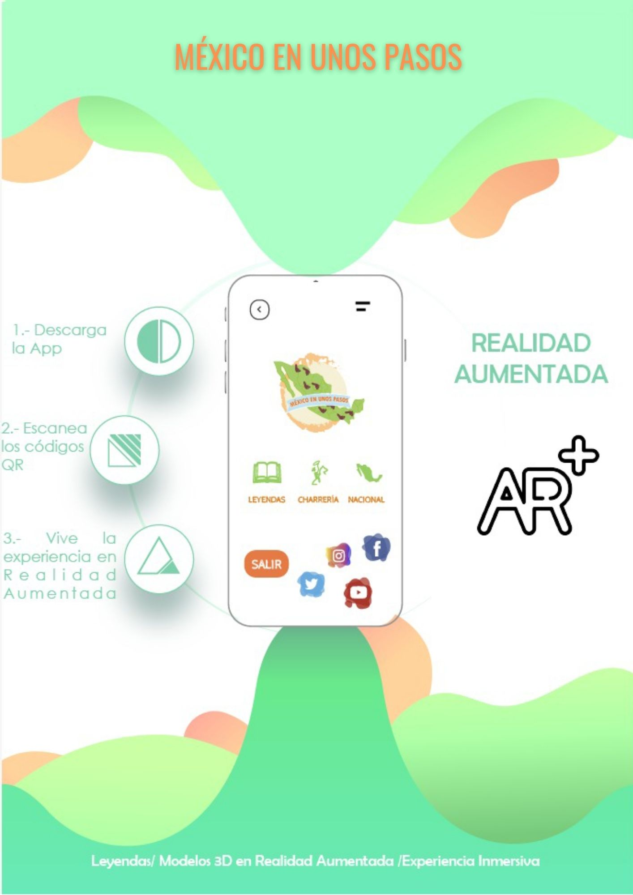

México en unos pasos App
México en unos pasos es una aplicación de Realidad Aumentada disponible para dispositivos móviles, como celulares y tabletas.
Para el uso de la aplicación, el usuario accede a la cámara del dispositivo, escanea los marcadores y al ser detectado se muestra el contenido en Realidad Aumentada. Así mismo el aplicativo permite la interacción con el contenido mediante el uso de gestos táctiles; de este modo los usuarios viven una experiencia única, pues visualizan contenido como modelos 3D de espacios y monumentos emblemáticos en México, audio descripciones de las leyendas elegidas, así como animaciones que complementan todo el contenido de las diferentes exposiciones.
